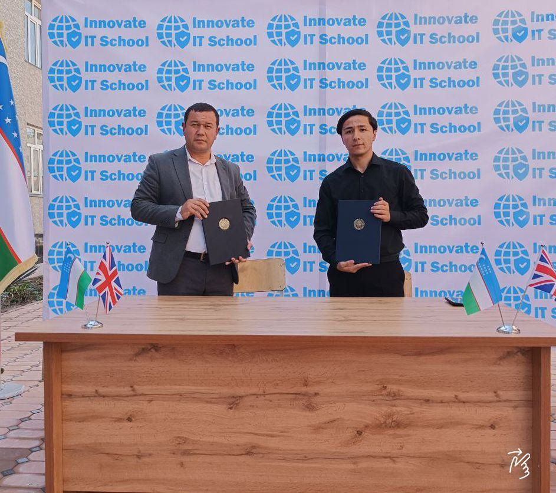
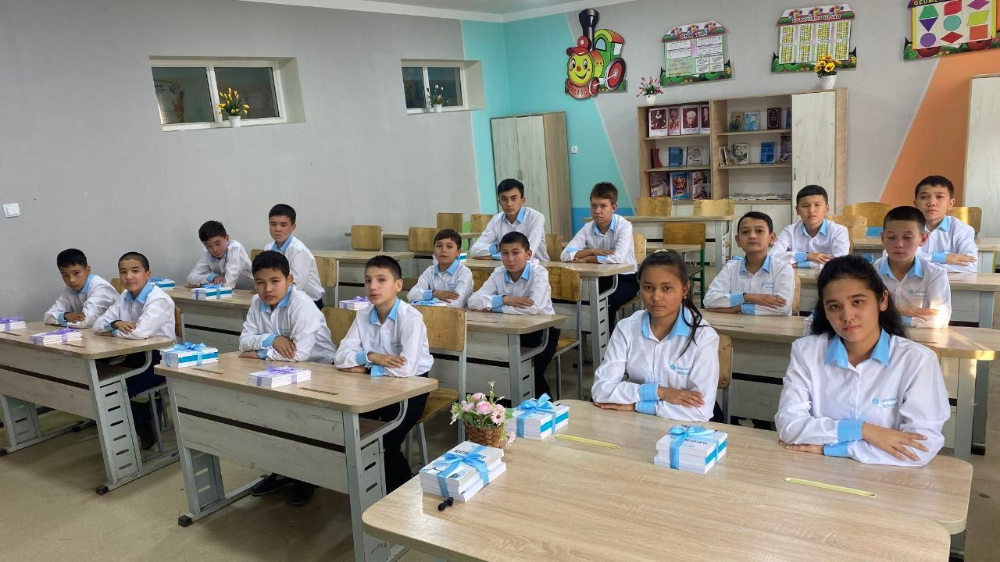
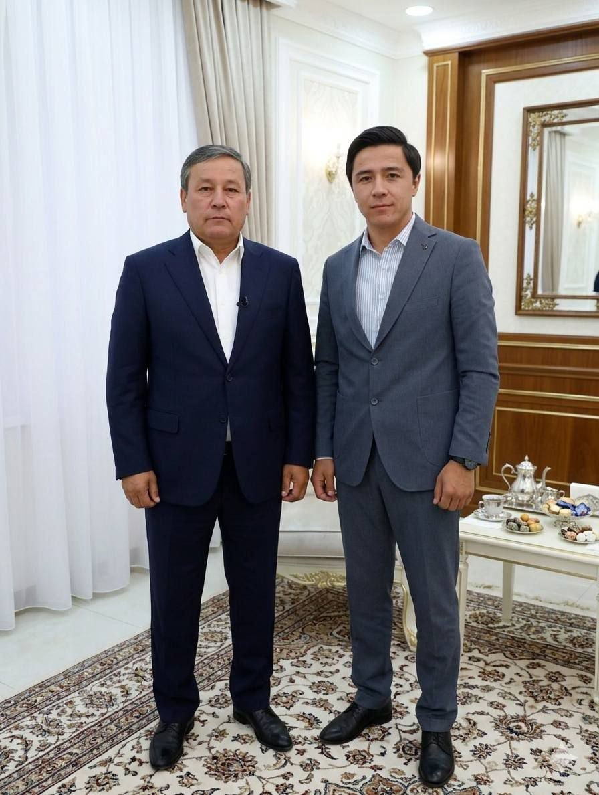

InnovateIT School — o'quvchilarga maktabning o'zida Axborot texnologiyalari, matematika va ingliz tilini xalqaro standartlarga mos dasturlar asosida xavfsiz, zamonaviy va tizimli tarzda o'rgatadigan milliy ta'lim dasturi.
2026–2027 o'quv yilida Baliqchi tumanidagi davlat maktablarida 1-sinfdan 9-sinfgacha maxsus sinflar tashkil etiladi — jami 3 600 nafar o'quvchi InnovateIT School dasturi asosida ta'lim oladi.

InnovateIT School — maktab o'quvchilari uchun ishlab chiqilgan zamonaviy ta'lim dasturi bo'lib, Axborot texnologiyalari, matematika va ingliz tilini yagona tizim asosida o'qitishga yo'naltirilgan. Dastur xalqaro ta'lim tajribalari asosida ishlab chiqilgan bo'lib, o'quvchilarning yoshi va bilim darajasiga mos ravishda bosqichma-bosqich rivojlanishini ta'minlaydi.
Bizning asosiy maqsadimiz — bolalarga qo'shimcha o'quv markazlariga qatnash zaruratisiz, aynan o'z maktabida sifatli va zamonaviy ta'lim olish imkoniyatini yaratishdir. Shu sababli barcha mashg'ulotlar maktab hududida, maktab dars jadvaliga moslashtirilgan holda tashkil etiladi. Bu esa ota-onalarga farzandlarining xavfsiz va nazorat ostidagi muhitda ta'lim olayotganiga ishonch bag'ishlaydi.
InnovateIT School'da uchta yo'nalish — Axborot texnologiyalari, matematika va ingliz tili — alohida fanlar sifatida emas, balki bir-birini to'ldiruvchi yagona ta'lim tizimi sifatida o'qitiladi. Har bir bosqichda o'quvchilar nazariy bilim bilan bir qatorda amaliy ko'nikmalarni ham egallab boradilar.

Bizning dasturimizning muhim afzalliklaridan biri — ingliz tilining barcha fanlar bilan uzviy bog'langanidir. Xususan, Axborot texnologiyalari darslarida o'quvchilar dasturlash va texnologiyaga oid inglizcha atamalar, buyruqlar hamda professional terminlarni muntazam o'rganib boradilar. Matematika fanida esa ingliz tilidagi matematik tushunchalar bosqichma-bosqich kiritilib, o'quvchilarning fan va tilni birgalikda o'zlashtirishiga yordam beriladi.
Natijada o'quvchilar nafaqat o'zbek tilida, balki ingliz tilida ham zamonaviy texnologiyalar va matematika sohasidagi bilimlarni tushunish va ulardan foydalanish ko'nikmasini shakllantiradilar.
InnovateIT School ta'lim dasturi o'quvchilarni kelajakdagi xalqaro ta'lim imkoniyatlariga tayyorlashni ham maqsad qiladi. Shu bois matematika yo'nalishida SAT imtihoni uchun zarur bo'lgan bilim va ko'nikmalar bosqichma-bosqich shakllantiriladi, ingliz tili yo'nalishida esa o'quvchilar IELTS imtihoniga tayyorgarlik ko'rish uchun mustahkam til bazasini yaratadilar.
Har bir bosqich o'quvchilarning yoshiga va bilim darajasiga mos ravishda tuzilgan bo'lib, murakkablik darajasi izchil oshirib boriladi. Bu yondashuv o'quvchilarga bilimlarni chuqur o'zlashtirish va kelgusida xalqaro imtihonlarga ishonch bilan tayyorlanish imkonini beradi.
InnovateIT School'da ta'lim faqat fanlarni o'rgatish bilan cheklanmaydi. O'quvchilar:
InnovateIT School — bu shunchaki qo'shimcha dars emas. Bu o'quvchilarning bugungi bilimini mustahkamlash, ertangi imkoniyatlarini kengaytirish va ularni kelajak kasblariga tayyorlashga xizmat qiladigan zamonaviy ta'lim tizimidir.
InnovateIT School loyihasi nafaqat maktablar, balki viloyat hokimiyati darajasida ham qo'llab-quvvatlanadi.

InnovateIT School'ni boshqa ta'lim muassasalaridan ajratib turadigan asosiy ustunliklar bilan tanishing.
Qo'shimcha o'quv markaziga borish shart emas — darslar aynan o'quvchi o'qiydigan maktabda tashkil etiladi.
Buyuk Britaniya va Singapur milliy ta'lim dasturlariga moslashtirilgan, bosqichma-bosqich o'quv reja.
O'quvchilarni milliy va xalqaro fan olimpiadalari hamda nufuzli tanlovlarda ishtirok etishga tayyorlaymiz.
Har bir bosqichda Axborot texnologiyalari, Matematika va Ingliz tili birgalikda, yosh va bilim darajasiga mos ravishda chuqurlashib boradi — Ingliz tili ulushi bosqich sayin ortib boradi.
Kichik yoshdagi o'quvchilar uchun raqamli savodxonlik va Axborot texnologiyalari dunyosi bilan birinchi tanishuv.
Dasturlashning asosiy mantig'i, algoritmik fikrlash va birinchi loyihalar.
Murakkabroq dasturlash tillari, real loyihalar va jamoaviy ishlash ko'nikmalari.
Kasbiy darajadagi bilimlar, xalqaro sertifikatlash va oliy ta'limga tayyorgarlik.
Barqaror va intensiv jadval — bilim bosqichma-bosqich, izchil shakllanadi.
Darslar haftada 6 kun, kuniga 2 soatdan tashkil etiladi — maktab dars jadvaliga moslashtirilgan holda, bola alohida qatnov va vaqt yo'qotmaydi.
Quyida bizning namunaviy haftalik jadvalimiz bilan tanishishingiz mumkin.
👆 Nima berilishini bilish uchun sovg'a qutisiga bosing
Foundation bitiruvchilari O'zbekistondagi nufuzli xorijiy xalqaro universitetlarga hamda Dunyoning Top 500, Top 100, Top 50 talikka kirgan universitetlarida ikkinchi kursdan o'qishini davom ettirish imkoniyati ega bo'lishadi.
Foundation bitiruvchilari quyidagi davlatlardagi universitetlarga 2-kursdan qabul qilinish imkoniyatiga ega bo'ladilar.
Qabul boshlandi — joylar cheklangan. Ro'yxatdan o'ting va batafsil ma'lumot oling.
Ro'yxatdan o'tish →